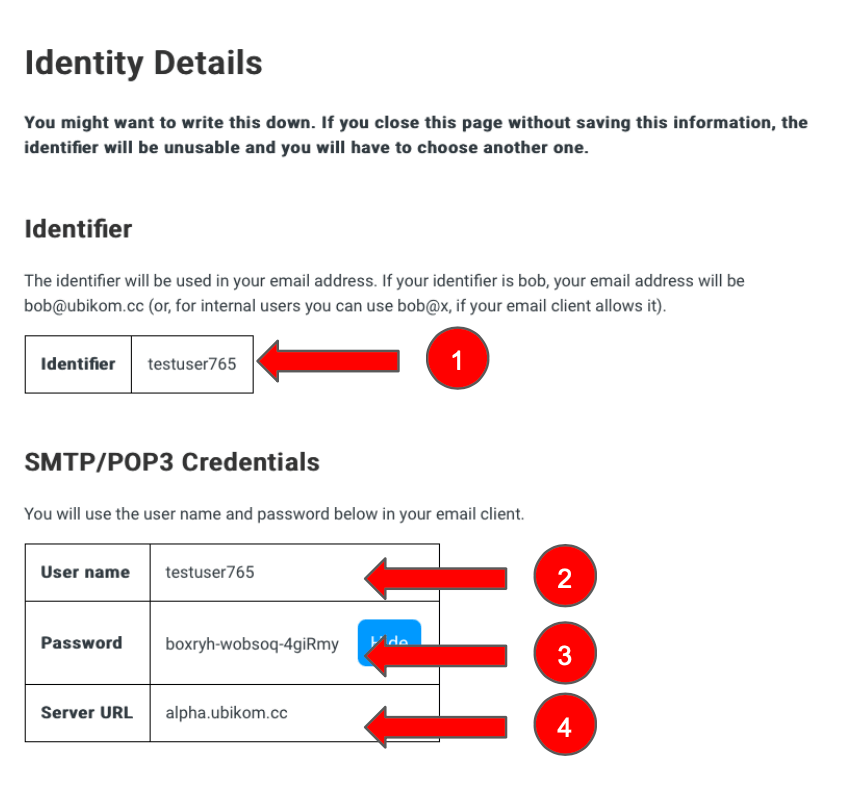
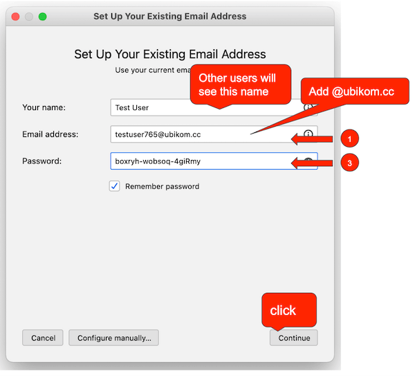

After you finish the web setup, you must have the following information: 
Let's go over the information on this page. You need your private key (5 and 6) to keep the ultimate control over your identity. Although you don't need it to set up your email client, you might need it in future if you want to make any changes to your configuration, for example, change your POP3/SMTP credentials, redirect email to a different server, etc. Save your key file in a secure location (item 5). Write down your key recovery phrase (item 6) and keep it in a secure, offline location. If your key file is ever lost, you may use your key recovery phrase to restore your private key.
To set up your email client, we will use the following information:
Below, we will show how to set up some popular email clients, step by step
If you haven't done it already, download Mozilla Thunderbird here.
Open Thunderbird and add new account

Your name is whatever you choose. If your identifier was "bob", your email address will be bob@ubikom.cc (or, you can use bob@x. We don't like domains. We want to get rid of domains. But since the client wants one, we have to give it something). The password is what you entered as a password when getting your identity, in our case, pumpkin123.
Click "Continue". You will be presented with the next dialog.
Under INCOMING, enter the following:
Under OUTGOING, enter the following:
Send a message to yourself (bob@x) to make sure everything works. You will be prompted for your password, enter the password you used when getting your identity (in our case, pumpkin123).
When you send email to another Ubikom user, your message is encrypted with a unique key so only the recipient can decrypt it. Sometimes you might want to send email to users outside the Ubikom ecosystem. Currently we provide a gateway to the legacy email world. When you send email through the gateway, it will be decrypted and sent as a regular old email. Be careful when you send email to the external addresses. In future we will add a warning, but for now you need to pay attention.
With the simplest configuration, public email proxy handles encryption and decryption for you. One of the key ideas we have is that user must be able to strike the right balance between security and convenience. Because Ubikom is an open-source project, you can run any part of it (and really the whole thing, if you want) yourself. Probably the first part you might want to consider running is the email proxy. If you run it yourself, your encryption key never leaves your possession. See the code at GitHub repo, where you can also download the binaries (or build them from source yourself).
Check the list of known issues: github.com/regnull/ubikom/issues
Contact: lgx@ubikom.cc